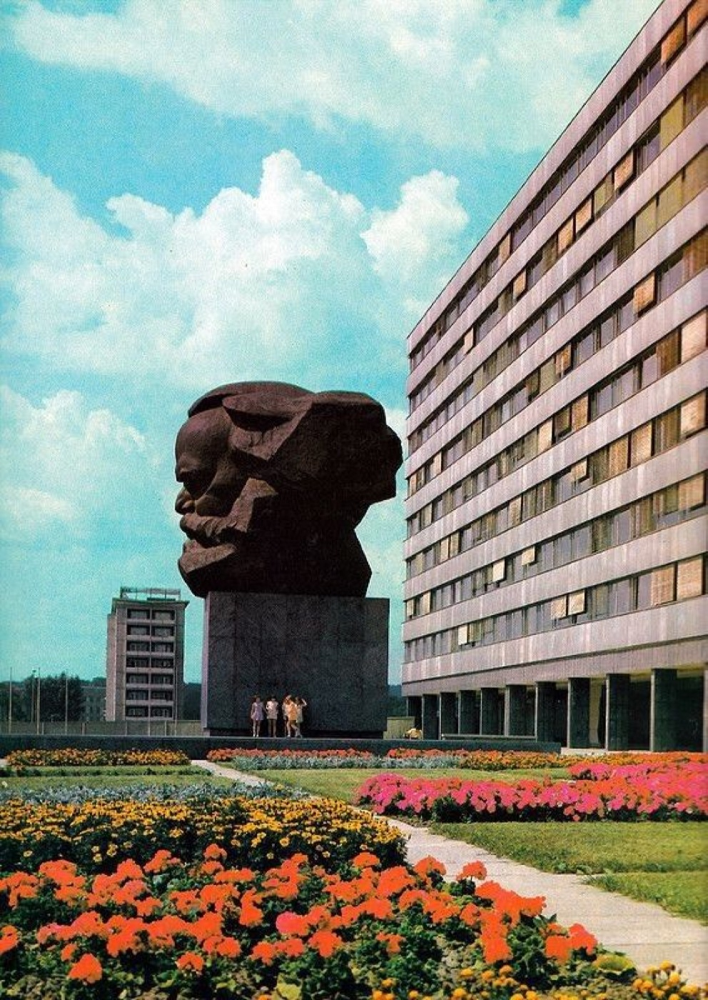
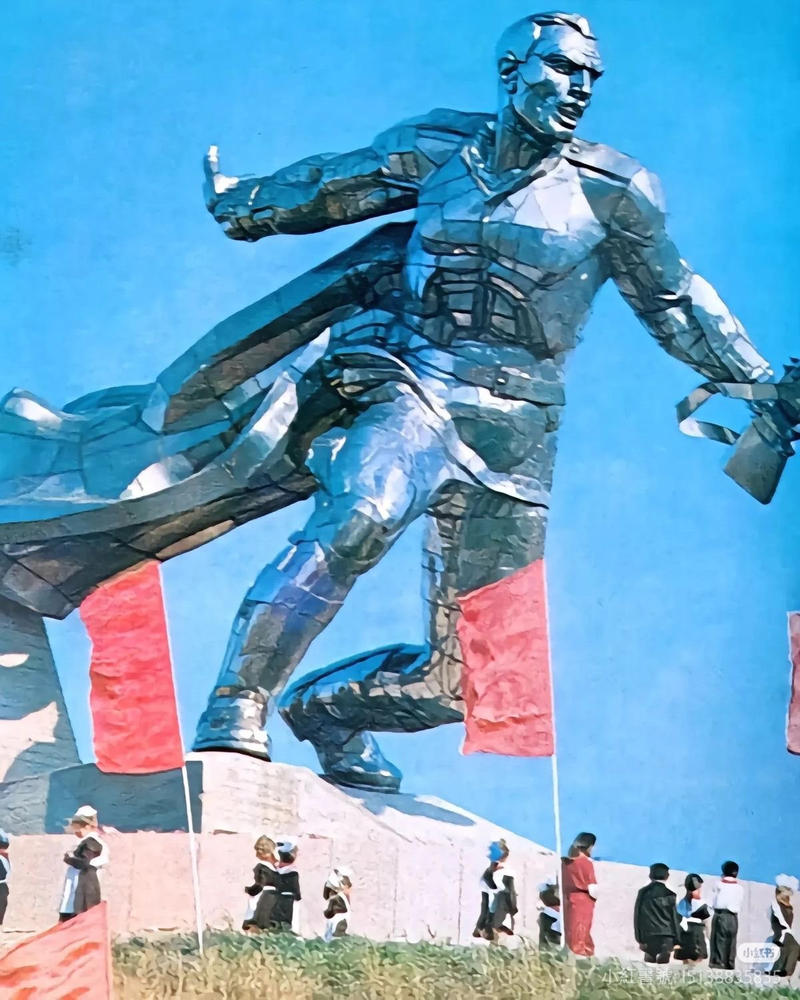
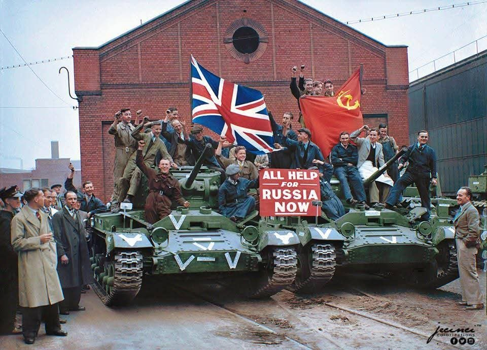
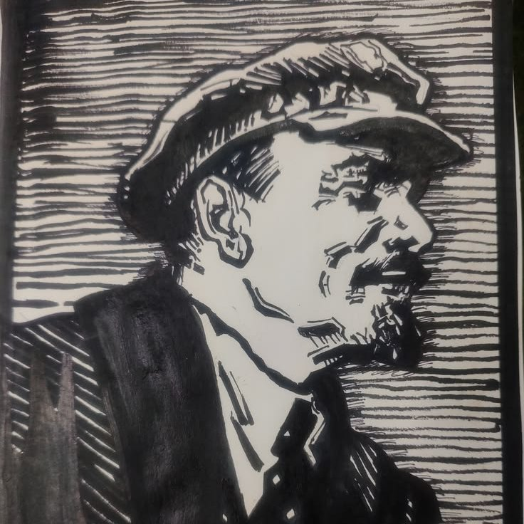
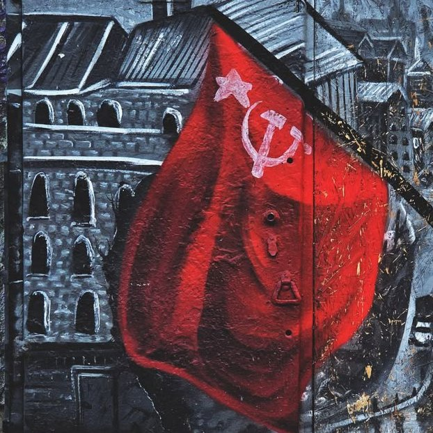

01 Plates





02 Moving Agitprop
Short-form edits made and circulated by the movement's own accounts. The archive files them as artefacts of how the tradition presents itself now, in the medium it actually reaches people through, which is the same reason FILE 10 filed the poster and the newsreel.
03 Provenance
The clips in §02 were made and posted by other people. They are reproduced here as archive material, unaltered except for re-encoding to a smaller file size, and the archive claims no authorship of any of them. If you made one of these and want it removed or credited differently, the repository is public and an issue or a message will do it — see the source.
Plates are a mix of photographs of public monuments, historical posters and contemporary murals. The portraits used throughout the twenty files upstairs are hotlinked from Wikimedia Commons under their own licences and are not stored here.